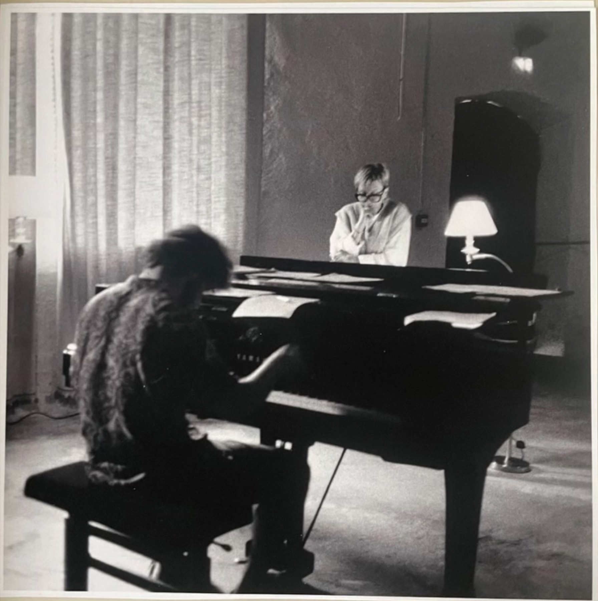
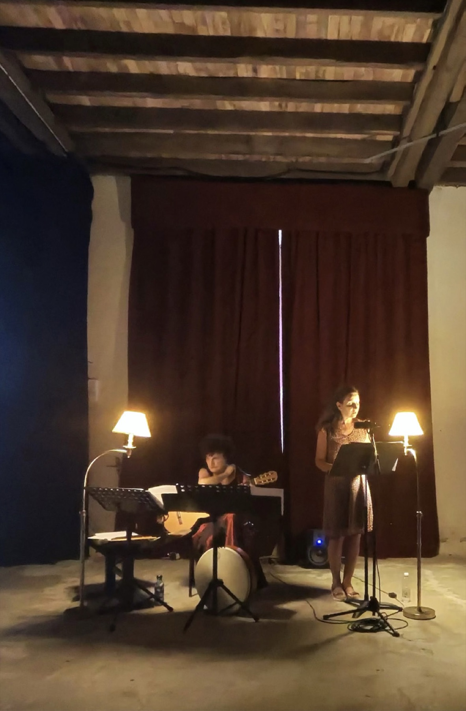
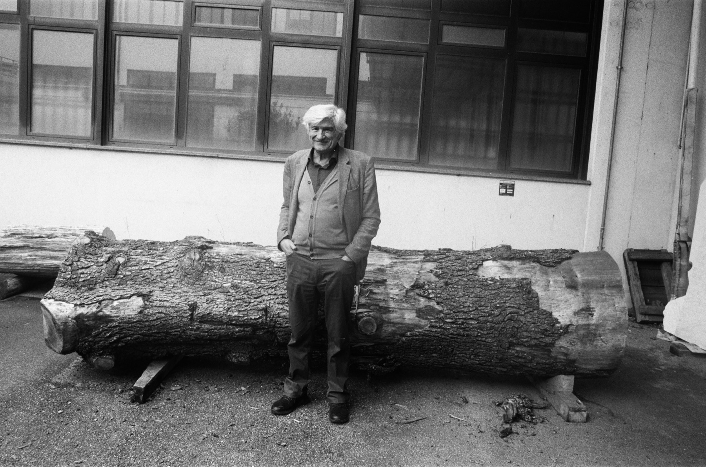
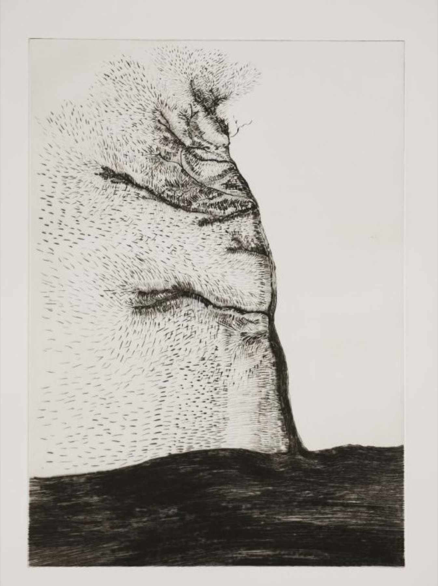
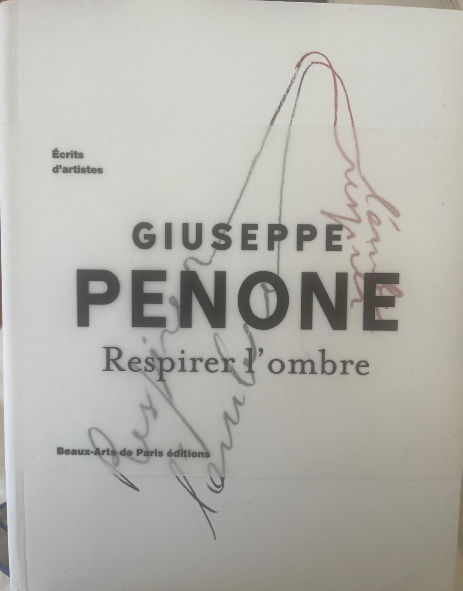
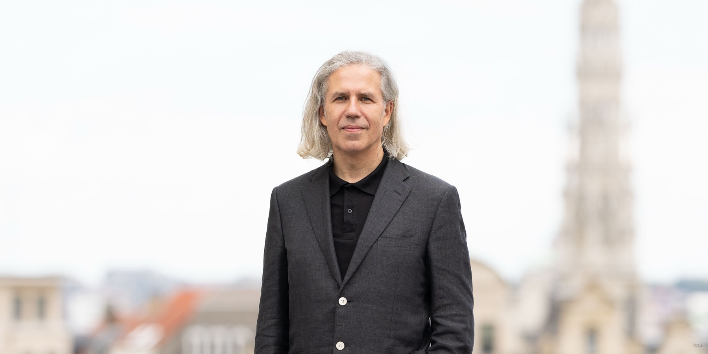

Festival de Poésie et Musique Contemporaines
Aux origines
La poésie aborde des sujets universels de façon non conventionnelle. De ce fait, elle s'adresse à tous.
Par-delà les mots habituels, chacun peut y trouver l'écho de ses propres ressentis. Un vers parfois, un mot, une phrase suffisent à éveiller une image intérieure forte.
La rencontre de la musique avec les textes met l'accent sur le caractère musical des écrits poétiques proposés. Cela permet au public, même non initié, d'aborder la poésie de manière spontanée en se laissant guider par ses propres sentiments.
L'objectif est d'ouvrir largement de nouvelles portes vers la poésie et la musique contemporaine, dans le cadre d'un festival accessible à tous.
L'idée de créer en Corrèze des rencontres annuelles de Poésie et Musique — En Marge — est née pendant le confinement, comme une évidence, un besoin salutaire. Pendant cette période, j'ai eu davantage le temps de lire et de découvrir la poésie. J'ai admiré le travail des auteurs, illustrateurs et de leurs chefs d'orchestre, les talentueux éditeurs, qui œuvrent passionnément pour la faire exister.
Je leur suis infiniment reconnaissante de nous apporter la richesse, la liberté sans contrainte et l'ouverture à travers un univers où règne la beauté.
Fondatrice
Fondatrice du festival En Marge, elle en imagine la programmation et les rencontres entre poésie et musique contemporaine au Château du Saillant.
Premier récital · Août 2024
En août 2024 s'est tenu l'embryon de ce projet, En Marge, afin de le lancer. Un premier récital intitulé « Là » a fait résonner, comme autant de moments uniques, des textes écrits par Marina du Saillant sur la musique improvisée au piano par Kolia Chabanier.

Kolia Chabanier et Marina de Lasteyrie du Saillant © Ted Belton
Deuxième récital · Août 2025
En août 2025, la poétesse — également peintre, illustratrice et éditrice de livres de poésie faits à la main — Stéphanie Ferrat a lu ses textes, accompagnée à la guitare ancienne, aux percussions et à la voix par la mezzo-soprano, instrumentiste et compositrice franco-libanaise Roula Safar.

Roula Safar et Stéphanie Ferrat © Marina du Saillant
Récital inaugural du FDDDS · 2026
En 2026, un récital présentera des textes de Giuseppe Penone, artiste-poète italien, acteur majeur du mouvement de l'Arte povera. Les partitions de musique issues de la résonance de la structure des arbres créés par l'artiste seront jouées à cette occasion.
La musique de Jean-Paul Dessy, compositeur belge contemporain, accompagnera aussi ce récital inaugural du FDDDS sur le thème « Arbre, Eau, Pierre », qui sera dédié au travail de Giuseppe Penone.

Portrait de Giuseppe Penone devant son atelier à Turin © Olga du Saillant
Suite à un travail mené en Ardèche en 2011, l'artiste avait imaginé frapper le tronc de quatorze essences d'arbres différentes (chêne, cyprès, etc.) avec un maillet, enregistrant au passage la qualité de la vibration du bois même, sa résonance en quelque sorte. Par la suite, un long travail d'analyse en studio avait donné à cette matière sonore brute la forme de quatorze partitions.

Transcription musicale de la structure des arbres, Giuseppe Penone — Éditions Bernard Chaveau, 2012

Respirer l'ombre, Giuseppe Penone — Beaux-Arts de Paris éditions, 2021

Jean-Paul Dessy, compositeur et violoncelliste belge, philologue, latiniste et poète © Marc de Pierrefeu
Perspectives
Je souhaite que ces premiers récitals ouvrent la voie à de nombreux autres qui permettent au public de découvrir le travail d'auteurs des XXe et XIXe siècles, de créateurs et de musiciens contemporains vivants. On peut imaginer aussi des œuvres vidéo ou des performances de danse contemporaine en écho avec leur travail.
Des résidences d'artistes ou ateliers créatifs pourraient se développer autour du festival. Des éditeurs viendront, je l'espère, se joindre à eux pour présenter leurs collections.
Tout reste ouvert pour développer ce projet. Les rencontres de Poésie et Musique dans le cadre d'En Marge pourront se développer avec des classes et résidences dans l'environnement accueillant d'un parc botanique et artistique, en devenir, sur le thème « arbre, eau, pierre ».
L'équipe
Kolia Chabanier
Felix Cholet
Paul Durand
Jean Ferrere
Eloïse du Saillant
Olga du Saillant
Leo Peeters
Gilles Tiberghien
Rester informé
Pour recevoir les dates des prochains récitals du festival En Marge, écrivez-nous.
Nous écrire